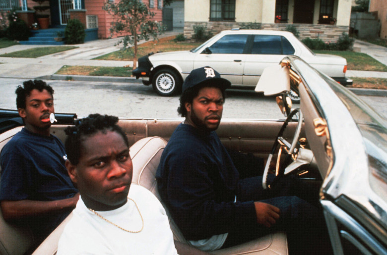
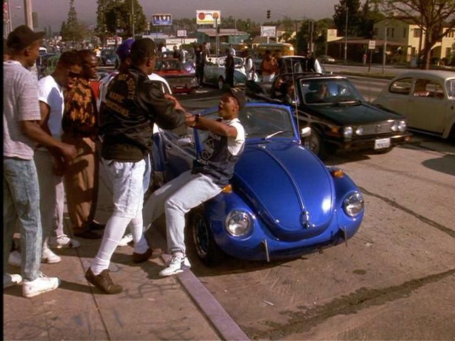
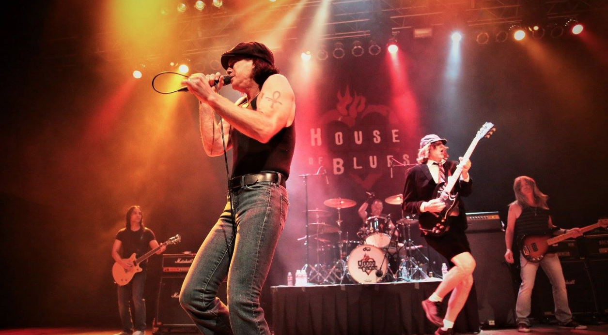

How an outside entity used Hip Hop to eliminate African American progression
Take a look at what's in the background.
What did Tre drive? Again, look at the vehicles in the background.
I believe there was a very well thought out plan hatched back in the mid 80s to ultimately slowly get rid of African Americans. I believe NWA was pushed by the powers that be in order to see this plan through. I believe the song "Back in Black" by AC/DC is evidence that their plan was a success and that White Supremacy was back in control. And over the course of the next 20 years White Supremacy slowly eliminated and controlled African American progression constraining to professional atheletes and hip hop artists.
The following might be more evidence. The song by SOS ft. Ms. Angela is a pollution. Nice Mercedes.
Original
Play, listen to the following
Soul Train 1971, where were was the African American community going?
If you were just to listen to the following list of songs and think of the African American community at that time, how many doctors, lawyers, upcoming college professors, teachers and CEOs were there?
https://www.youtube.com/watch?reload=9&v=JSEbDN49bYM&list=PLfZVr5b4hlMPChA726H-YUzsuOkmqRgza
- SOS Band
- Gap Band
- Alexander O'Neal
- Dennis Edwards
Theory, Sugar Hill Gang, Rappers Delight 1979 introduced, influenced unknowingly by an outside entity
AC DC Back in black 1980 Album can maybe be seen a celebration album.
1990s
NBA + Sprite + Hip Hop, grouped African Americans grooming young youth to think about becoming professional athletes and hip hop artists instead of professionals
Grown up, African American "Singers" not artists are extinct in America.
If you were to take the next short list of Artists and compare to the previous, where are we heading? What does the future look like? We were a mix, now we might be a little more polarized.
- NWA
- Dr Dre
- Master P
Why FUBU over Karl Kani? We are back in the 1970s again.
https://www.americanbar.org/about_the_aba/profession_statistics/ only provides demographic statistics back to 2008, and the statistic is steady at roughly 5%.
We love these artists, but something happened back in the early 80s that eliminated African American progression. Artists did what they could, but it created a cycle and it started back with Grandmaster flash. Do you understand?
Rap, Hip Hop could be inspiring the youth to become hip hop artists and professional athletes not industry professionals.
- Digital Currencies
- Artificial Intelligence
- Mobile network engineers like LTE
- International Finance
- and of course School Teachers
If you are interested in programming, Microsoft is a good company but part of the problem, Oracle, Apple, Google are a much better options.
This is off topic but on topic, important to know:
Microsoft dumped a lot of money into India. Microsoft's CEO now is Indian from India, we had a nation of minorities and people impoverished but he overlooked them and added another minority into this country, then and made them a non minority at the same time. If you are not understanding, Microsoft was experiencing a big hit due to a couple factors, better products and the Open Source movement which has been stalled. They panicked and decided to teach poor people in India how to program on the .NET platform as well as pushed PHP another programming language. They could have done this in Mexico, South East Asia and Africa but decided not to. They chose India to basically bail them out because they were willing to work for nothing.
Poo is the most important thing to Africa according to Mr. Gates...